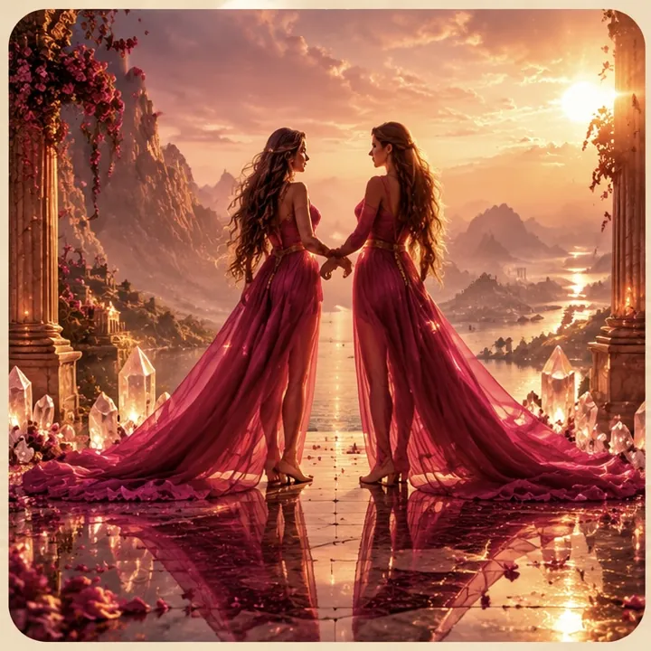
Отношения
Почему повторяется один и тот же сценарий? Что происходит между нами? Чего хочу я?
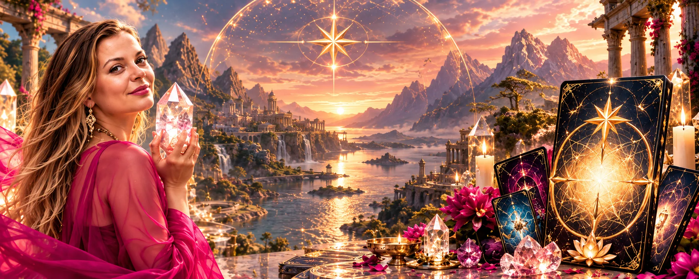
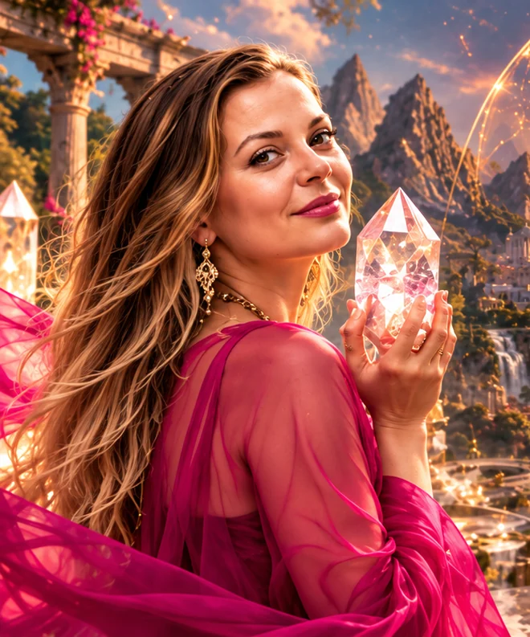
Трансформационная игра
Найди место, где твоя жизнь снова становится твоей
Трансформационная игра, которая помогает увидеть, что происходит с тобой сейчас, куда уходит твоя энергия, что удерживает тебя на месте и куда ты реально хочешь двигаться дальше.
Онлайн и оффлайн
ХОЧУ В ИГРУ →Ты много думаешь и много работаешь над собой.
И становится лучше и легче, но всё остаётся примерно на том же месте.
Отношения повторяются по знакомому сценарию.
Деньги словно упираются в невидимый потолок.
Есть идея, но нет энергии воплотить её.
Хочется перемен, но непонятно каких именно.
Или внешне всё хорошо, а внутри появляется ощущение:
«Я больше не хочу жить по-старому. Но куда мне дальше?»
И тебе не нужен ещё один совет.
Тебе нужно увидеть всю картину целиком.
Это не игра, в которой тебе расскажут, каким человеком тебе нужно стать. И не набор универсальных советов.
Ты приходишь со своим запросом и начинаешь исследовать его через игровое поле, карты, вопросы, символы, выборы и неожиданные события.
И постепенно то, что раньше казалось запутанным, начинает складываться в единую картину.
Ты приходишь в игру с вопросом:
«Почему я никак не могу изменить эту ситуацию?»
А уходишь не с чужим советом. Ты вдруг сама видишь:
«Вот оно. Теперь я понимаю».
“Я могу влиять на свою жизнь
Осознанно направлять свою энергию туда, где я хочу создать изменения.
Практически с любой ситуацией, в которой тебе сейчас нужна ясность.

Почему повторяется один и тот же сценарий? Что происходит между нами? Чего хочу я?
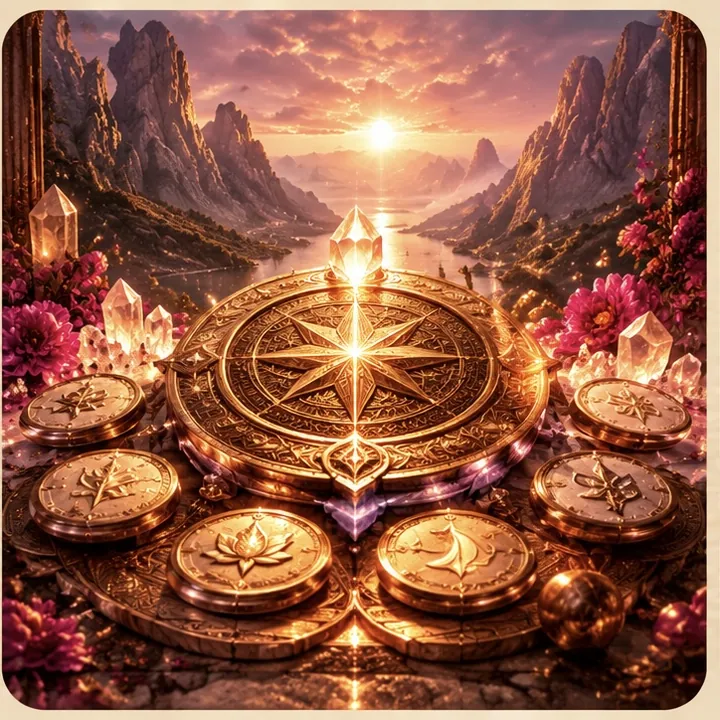
Что мешает мне двигаться дальше? Где я сама останавливаю своё развитие?
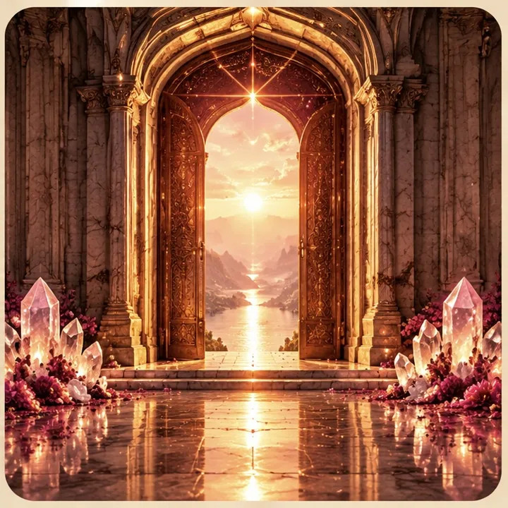
Куда мне дальше? Чего я действительно хочу сейчас?
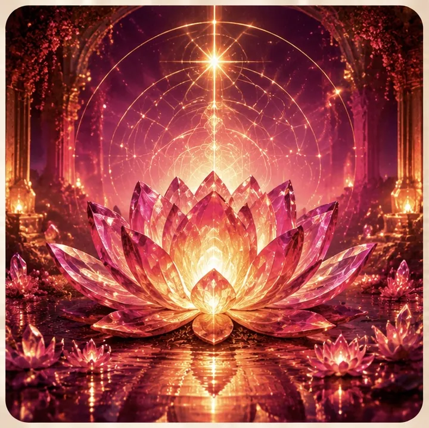
Почему ничего не хочется? Куда уходит мой ресурс?
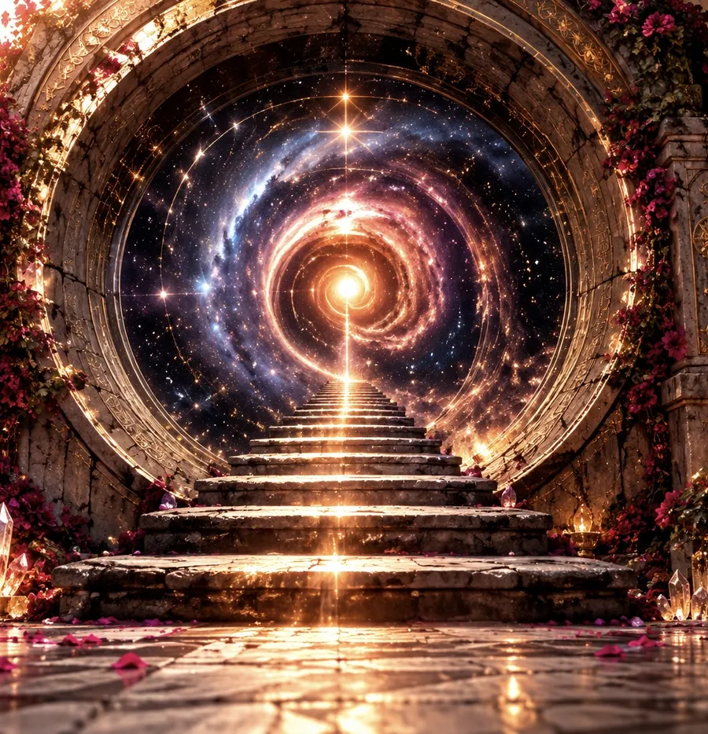
Почему я знаю, чего хочу, но никак не начинаю действовать?
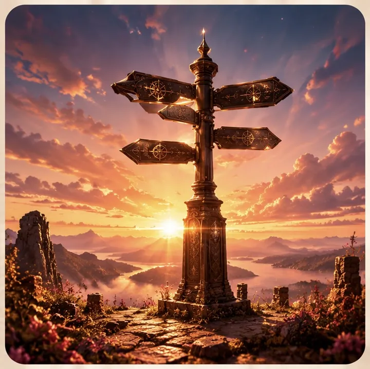
Какое решение действительно моё?
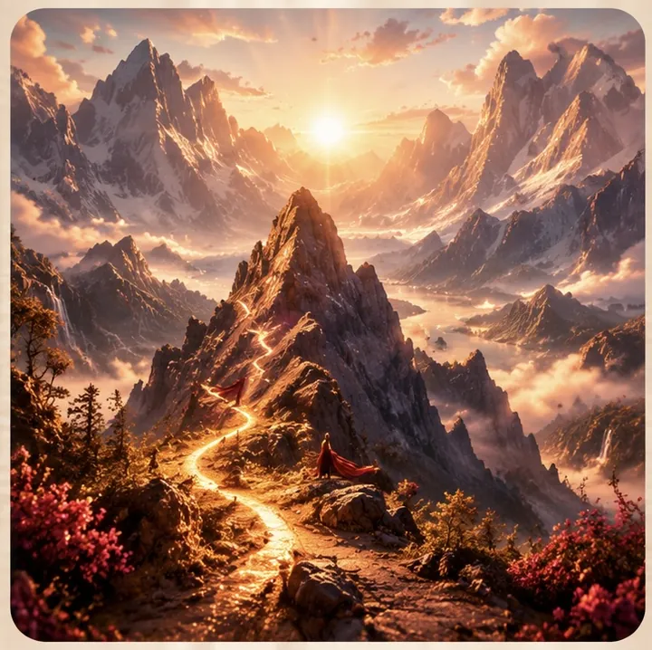
Почему я снова здесь?
И даже если ты пока не можешь сформулировать запрос и чувствуешь только «Что-то в моей жизни должно измениться» — с этого тоже можно начать.
Реальное игровое поле
Ты проходишь через 5 пространств «Точки силы».
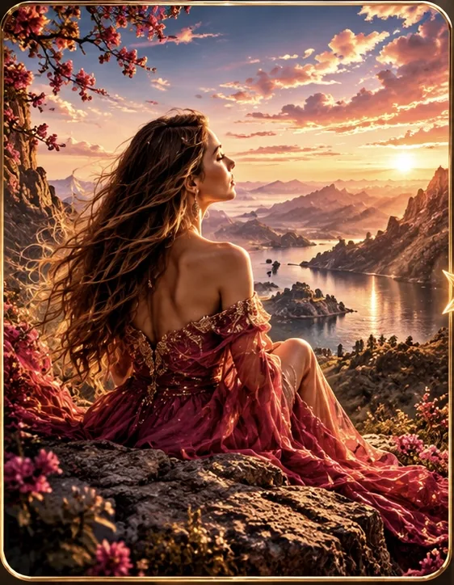
Сначала мы смотрим не на то, где ты «должна» быть, а на реальность. Что происходит сейчас? Что ты чувствуешь? В какой точке своей истории находишься?
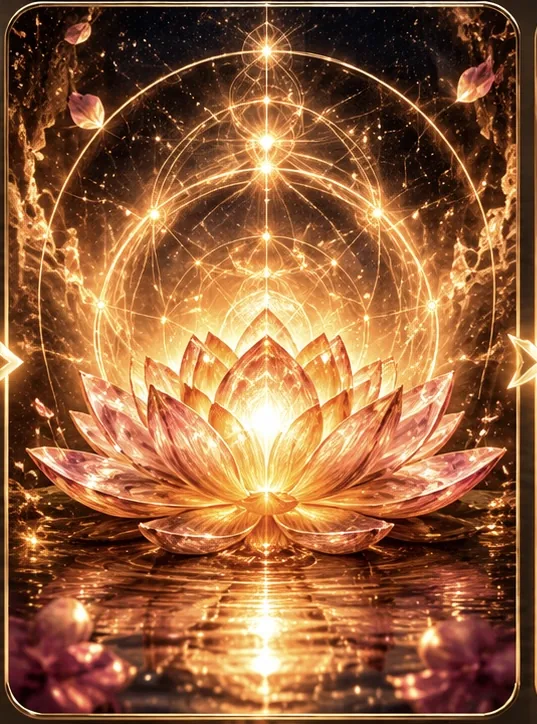
За нашими эмоциями, конфликтами и желаниями часто скрывается гораздо более глубокая потребность. Иногда одно её осознание полностью меняет взгляд на ситуацию.
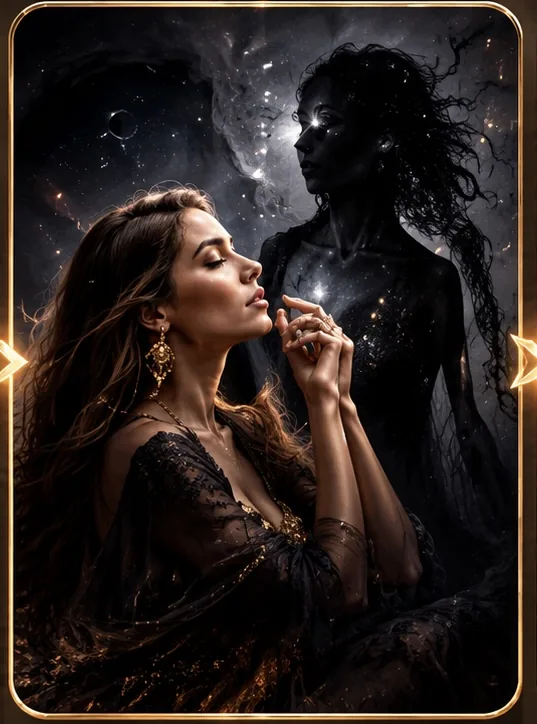
Здесь ты встречаешься со своей Тенью. Не для того, чтобы бороться с ней, а чтобы увидеть: какую Силу она всё это время скрывала. Жертва → Автор.
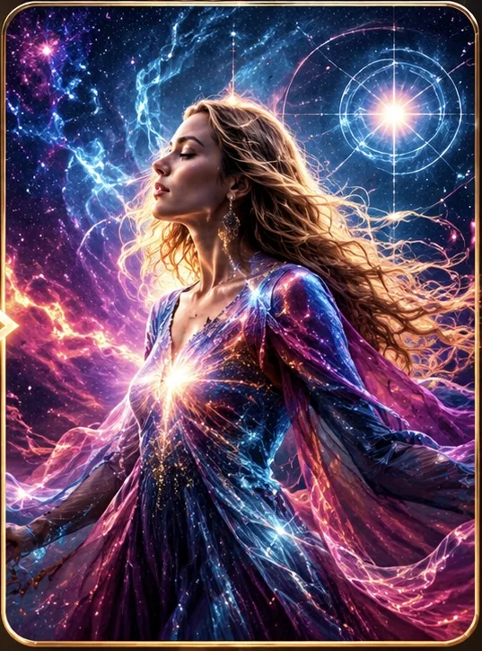
Мы ищем места, где остаётся твоё внимание: незавершённые истории, люди, ожидания, прошлое, страх будущего. И шаг за шагом возвращаем энергию туда, где она нужна больше всего — тебе.
Освободившееся пространство больше не остаётся пустым. Ты выбираешь: какое состояние, какую жизнь, какой следующий шаг ты будешь создавать с новой энергией?
Игра постепенно переводит тебя из вопроса «Почему со мной это происходит?»
в вопрос «Что я выбираю создать дальше?»
Во время путешествия ты встречаешь разные колоды игры.
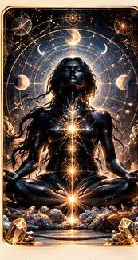
Помогает увидеть скрытый ресурс внутри привычного сценария.
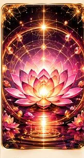
Показывают, чего тебе может не хватать на самом деле.
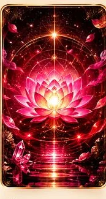
Помогают обнаружить, где остаётся твоя сила.
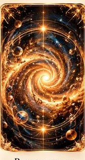
Предлагает конкретный способ вернуть внимание к себе.
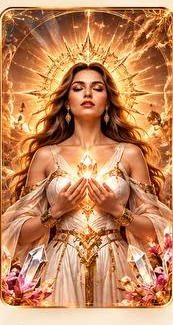
Помогают соприкоснуться с качествами, которые могут поддержать тебя сейчас.
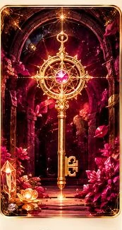
Открывают следующие этапы пути.
Помогает посмотреть на ситуацию с другой точки зрения.
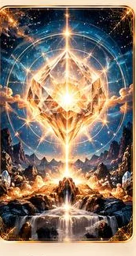
Переводит осознание в выбор, намерение и действие.
Неожиданно меняет ход игры и предлагает новый опыт.
Но заранее ты не знаешь, какой именно путь сложится у тебя.
И в этом магия игры.
Ты можешь пройти «Точку силы» из любой точки мира. Перед тобой будет полноценное игровое пространство: поле, карты, переходы между зонами, выборы и весь путь игры. Настоящая игра онлайн.
ВЫБРАТЬ ОНЛАЙН →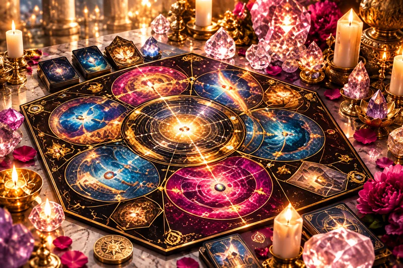
Если тебе хочется живого погружения — приходи играть за настоящий игровой стол. Поле. Карты. Кубик. Ключи. Энергия. Кристалл. И твой путь, который постепенно разворачивается прямо перед тобой.
ВЫБРАТЬ ОФФЛАЙН →Не обещание, что за несколько часов исчезнут все жизненные сложности. А кое-что гораздо ценнее.
Что со мной происходит?
Почему я оказалась именно здесь?
Где я теряю себя и свою энергию?
Какую силу я раньше не замечала?
Чего я хочу теперь?
Какой мой следующий шаг?
Потому что настоящие изменения часто начинаются не тогда, когда кто-то говорит нам правильный ответ.
А в тот момент, когда мы вдруг видим свой.
Есть жизнь, которую мы продолжаем проживать по привычке. И есть момент, когда внутри появляется: «Всё. Я хочу по-другому». Именно с этого момента может начаться игра.
Ты приходишь со своим вопросом. Проходишь свой путь. Собираешь свои ключи. Возвращаешь свою энергию. Находишь свою силу.
И в конце отвечаешь себе на самый важный вопрос:
Что я создаю дальше?
Запись в игру
Расскажи, какой формат тебе ближе. Я отвечу и помогу выбрать удобное время.